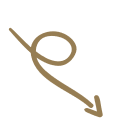
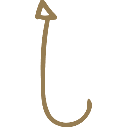

Please switch to a desktop or laptop for the full experience :)
Carolina del Corral FarrarosYou can check my vCard instead:
carolinadcf.github.io/vcard/Barcelona
@carolina.dcf
Ticket No: 12343315
Welcome to my portfolio website! Here, you'll find a collection of my projects, skills, and experiences. Feel free to explore and learn more about me and my work.
I am an open book!
Hi! I'm Carolina, an AV Systems Engineer based in Barcelona.
That's me :)

Try to find easter eggs related to my interests throughout the site :p
As you may have noticed, I like bringing art and technology together.
I also place importance on accessibility, social and environmental responsibility.
I am currently studying the Intelligent Interactive Systems Master's program at UPF.
I graduated as an AV Systems Engineer at UPF in 2023.
I also did my Erasmus at Maynooth University, Ireland in 2022.
I have been working as a researcher in the Interactive Technologies Group (GTI) at UPF since 2021. I've had the chance to work in different projects and explore various technologies. Here's a few:
If you paid attention, you might have guessed that I was raised in Barcelona.
I speak Catalan, Spanish, and English.

I have mixed feelings towards the Oxford comma...
If you'd like to get in touch, feel free to connect with me on LinkedIn.
LinkedIn: @carolina-dcf
GitHub: @carolinadcf
You will also find a more detailed version of my CV there.
Thanks to the amazing open source projects and communities that make this portfolio possible.
Special thanks to:
All corresponding credits are given where due in code.